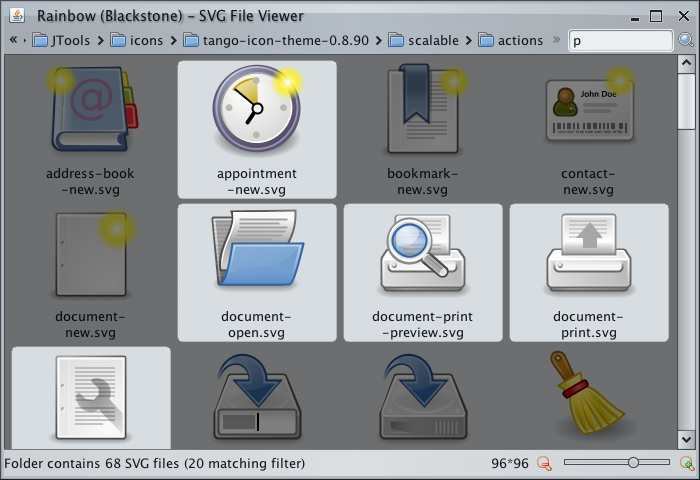

* requires access permissions to local disk to read SVG / SVGZ images and write matching Java2D code and filtered PNGs.
The goal of this project is to illustrate various animation, transition and translucency techniques for Swing applications.
 -
Local SVG browser.
-
Local SVG browser.
* requires access permissions to local disk to read SVG / SVGZ images and
write matching Java2D code and filtered PNGs.
 -
Remote Subversion SVG browser.
-
Remote Subversion SVG browser.
* requires access permissions to local disk
write matching Java2D code and filtered PNGs.